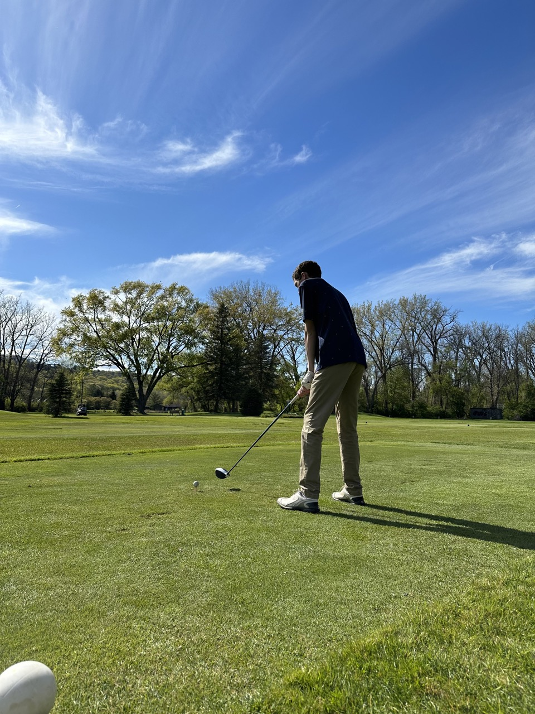

Hi, I am a senior at Cornell University studying Computer Science. Currently, I am interested in software engineering and robotics. Most recently, I was at the APL at The University of Washington working on localization algorithms for Autonomous Subsea Vehicles. Previously, I have worked at a manufacturing company building a database management system for assembly line production.
In my free time I am an avid golfer and call Cazenovia Country Club my home course. Throughout high school I worked at CCC and played tournaments there as a member of the golf team. When it is to cold out to golf I enjoy skiing. Currently, I am looking to make it out west to ski soon. To fill out the rest of my free time I can usually be found supported for my favorite team, Ohio State!
